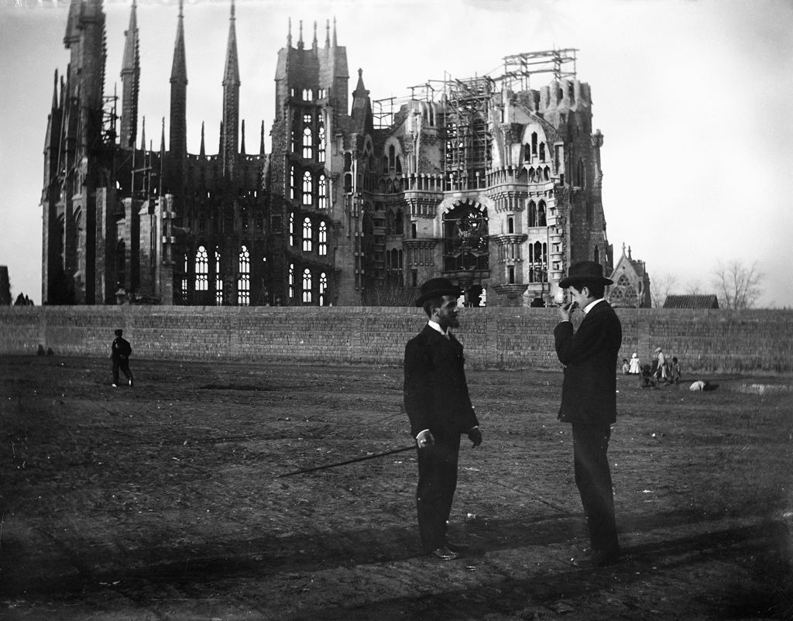

Interactive Timeline of Construction
Please explain what to do and how it works-
1882
The Crypt Begins Construction
Copyright: Rare Histprical Photos
Date -
1883
The Original Design
Copyright: La Basílica de la Sagrada Famiília
Original name: Church of the Poor -
1883
Antoni Gaudí joins the project
Copyright: Baldomer Gili i Roig - Museu d'Art Jaume Morera
Date -
1889
The Crypt is finalised by Gaudí
Copyright: Sagrada Familia Foundation
Date -
1891
The Nativity façade begins construction
Copyright: Image source: Arxiu Mas
Date -
1925
Title
Copyright: Rare Historical Photos
Date -
1926
Antoni Gaudí’s passes away
Description goes here
Date -
1930
The Nativity Facade is Completed
Copyright: 1930. Aerial photograph by Walter Mittelholzer, ETH-Bibliothek.
Date -
1954
The Passion façade begins construction
Copyright: Rare Historical Photos
Date -
1976
The Passion façade is completed
Copyright: Rare Historical Photos
Date -
2002
The Glory façade begins construction
2002 © Expiatory Temple of the Sagrada Família
Date -
 2013-2016
2013-2016The Evangelist Towers and the Virgin Mary and Jesus Christ Central Towers begin construction
From Basílica de la Sagrada Família/Facebook
Date -
2021
The Virgin Mary tower is completed
Getty Images
Date -
2023
The Evangelists towers are completed
Copyright: La Basilica de la Sagrada Familia
Date -
estimated: 2026
Estimated Date of Completiton
Copyright: Sagrada Familia Foundation
Date